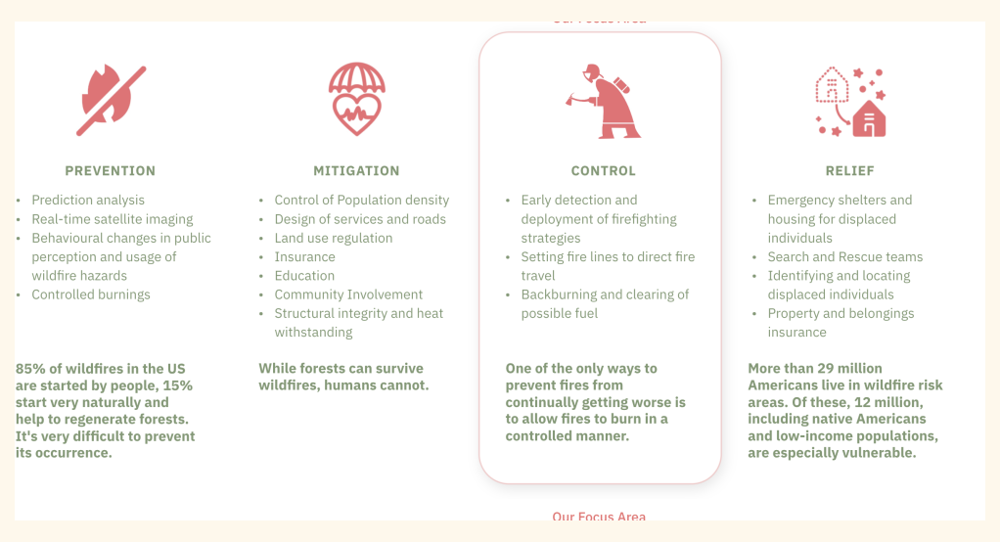
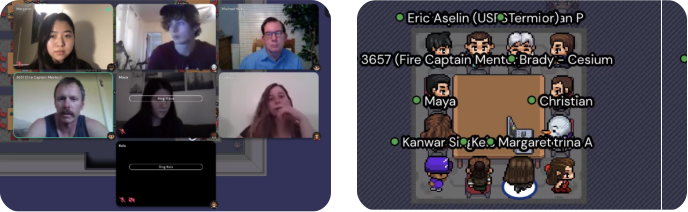
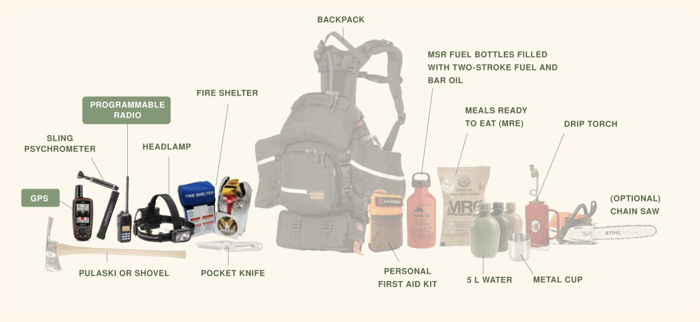
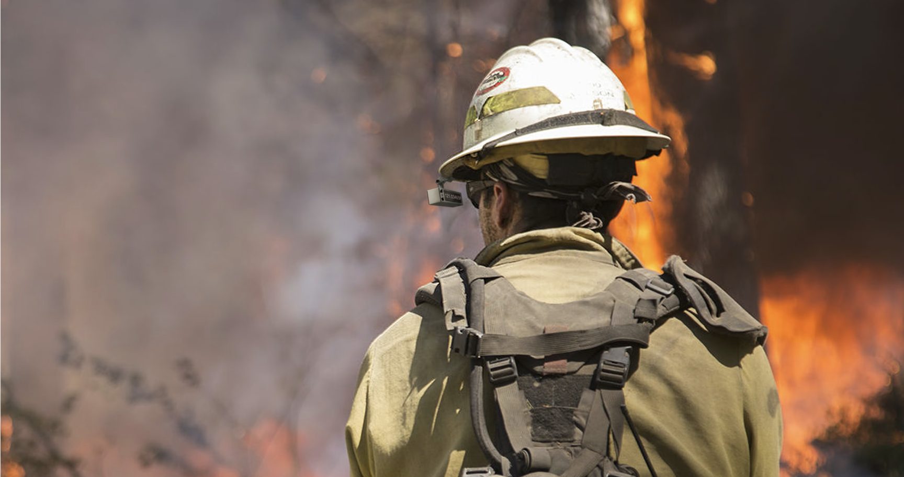
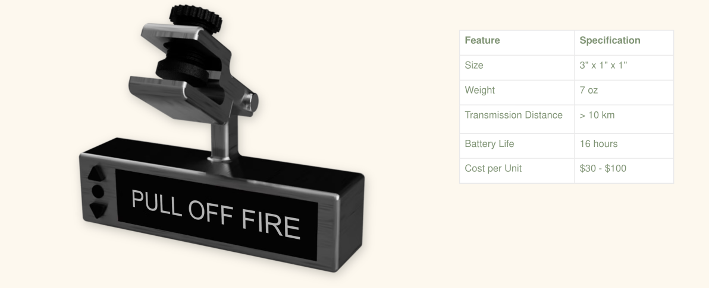
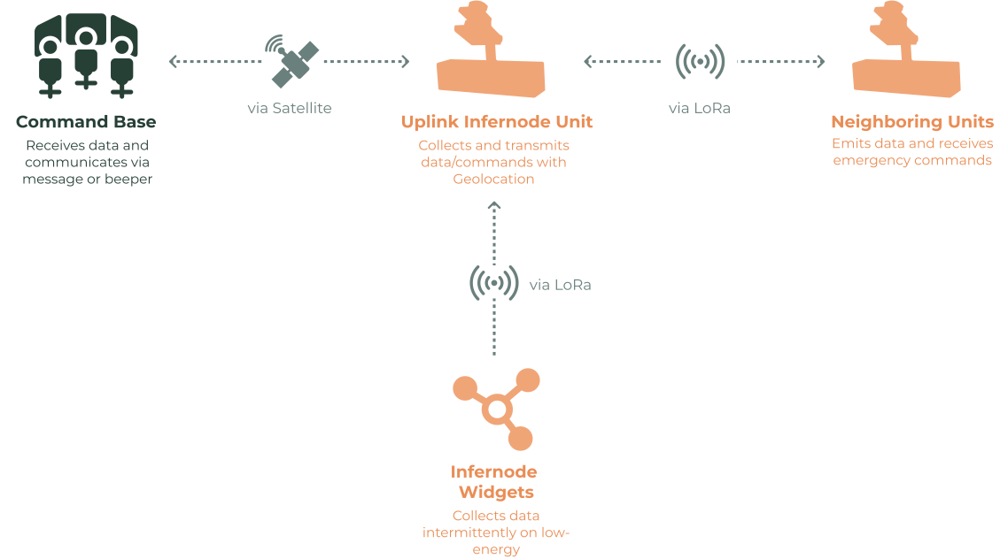
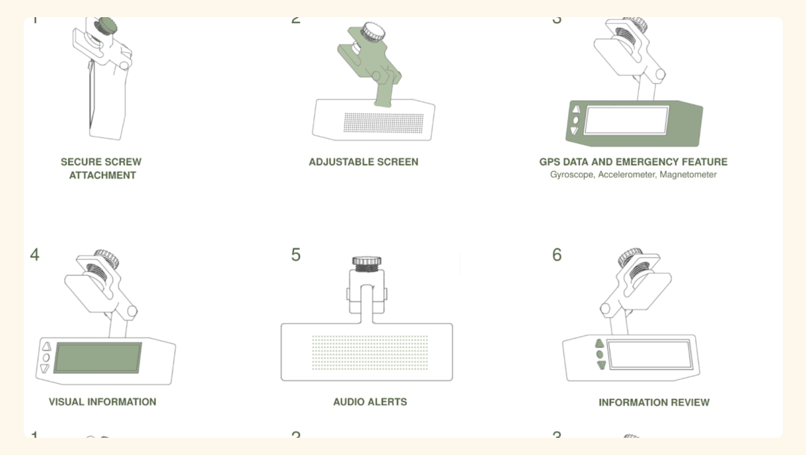
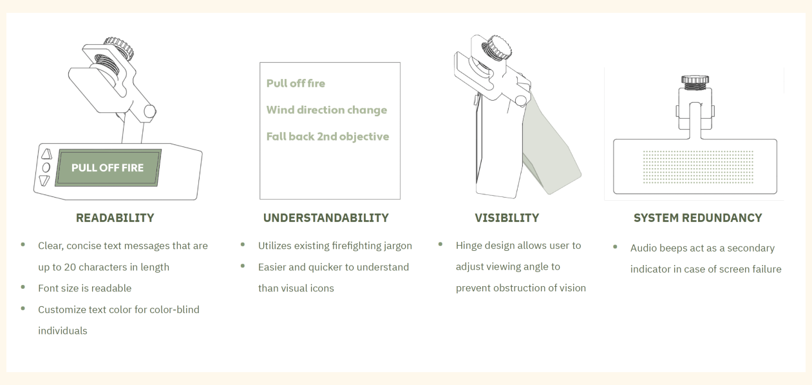

Can we re-think offline communication to aid with wildfire-fighting?
Finalist at the NSIN Beat the Blaze Hackathon 2021
Infernodes
Team:
Myself, Katrina Armistead, Kelsey Burhans, Maya Chatila
Timeline:
3 Months
My Role:
Tech Lead - Research, UI/UX Design, Digital and Physical Prototyping
Wildfire seasons are getting longer
With climate change and booming populations, wildfires are a growing global issue in both
frequency and magnitude. Hotshot and smokejumper gear are severely outdated, putting them at
an ever-increasing disadvantage. Augmenting existing tools would provide streamlined
communication, increased firefighting efficacy, and improved health and safety for field
units.

Firefighting strategies require immense coordination and
improved tools
Fire season is now on average 70 days longer than it was in the 1980s. The cost of wildfire
suppression has doubled over the last two decades due to climate change-induced droughts,
urban spread, and insect infestations. Wildfire teams are underfunded, with suppression
costs far outpacing budget increases, and municipalities are struggling to generate support
for necessary emergency services.
This is reflected in the gear and technology that is used for communication. As wildland
firefighters mostly work in remote locations, the lack of internet access severely limits
the availability of certain existing technologies. This makes communication and logistics
extremely slow, manual, and sparse. How might we help facilitate the efficiency and
effectiveness of wildland firefighting teams with low-cost technologies?

Hotshots and Smokejumper work in intensive, remote settings
to reduce the spread of fire breakouts
Hotshots and smokejumpers are the elite wildland firefighting crews in the US. Due to the
remoteness, crews must be prepared to be self-sufficient for a minimum of 48 hours in the
field. However, budgetary constraints and the challenges of utilising existing technology in
remote areas have stifled any meaningful innovation to their tools for over thirty years.
Communication among crews, is provided through line-of-sight radios that broadcast changing
conditions, emergency updates, and supplies crucial information. Based on user interviews,
communication is slow with immense amounts of clogged-up radio lines.
The accelerating environmental situation and lack of innovation to their gear leave crews
vulnerable to powerful and dynamic conditions, increasing the likelihood of accidents and
injuries, and making situational awareness and tracking incredibly difficult. As it stands,
hotshots and smokejumpers are facing 2021’s problems with tools from 1993.

Challenge 1: Who is our persona user?
Because of the diverse user base, we considered a variety of frontline users each with
distinct needs and experiences.
The role of the firefighter captain is one that involves managing many compounding and
evolving risks. During active firefighting, captains often coordinate the attack on the fire
and set up strategic plans.
One of the primary concerns for them is being able to keep track of their crew as it is
their responsibility to ensure the safety and health of their crew members, along with
staying in constant communication with the firefighting base and relaying any important
strategy decisions and information.


Challenge 2: Existing tools don't work in a remote setting
A driving vision for what this product might be was the idea that users could utilise their
own memories to help inform where they needed to go. This drew from principles in
Orienteering, where professional orienteers look for identifiable ‘linear features’ near
their marker location to help with ‘rough’ navigation.
Lane utilises graph network structures to find breadth-first routes that connect a database
of points to each other. These suggestions are ordered based on the users’ degree of
familiarity with memory points or routes they’ve already taken.

Challenge 3: Keeping things low tech
Individuals with spatial anxiety cover a broad range of user types. As a result, there were
a number of different use cases and scenarios that needed to be considered - particularly in
relation to how familiar a user might be with both their current environment, and with their
intended destination.

Introducing Infernodes
Lane is a rethinking of the traditional GPS routing system to center around pedestrian
users
with varying degrees of spatial anxiety. Built with React Native, it proposes the use of
memory attachments named ‘Pebbles’ and route systems named ‘Lanes’ as a way to help
users
navigate within familiar and new destinations, nudging users to recall observations,
thoughts, memories, and ideas that they experience in their everyday lives across their
built environment.

Infernodes System (Device and Software Platform)
How it Works

Key Features

Accessibility Design

Web Platform Interface
Reflections & Learnings
- When working within a new highly specialised user group, prioritize and listen intently to the experience recounts of key stakeholders. Learn from what has been tested or tried already by users and improve those experiences further.